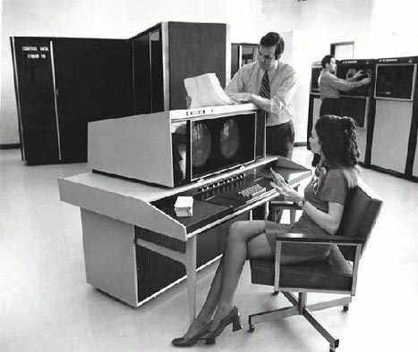
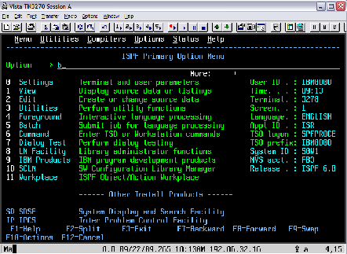
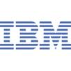

This is how standard Mainframe looks like
Since I was trained and worked mostly on Mainframes I have added this section to give more insight about what Mainframe is. Mainframe computers (Also referred to as "big iron") are powerful computers used primarily by corporate and governmental organizations for critical applications, bulk data processing such as census, industry and consumer statistics, enterprise resource planning, and transaction processing. The term originally referred to the large cabinets that housed the central processing unit and main memory of early computers.

Photo above shows emplyees working on Mainframe Machine. Large box in the end demonstrates its size
IBM mainframes dominate the mainframe market at well over 90% market share. Unisys manufactures ClearPath mainframes, based on earlier Burroughs products and ClearPath mainframes based on OS1100 product lines. In 2002, Hitachi co-developed the zSeries z800 with IBM to share expenses, but subsequently the two companies have not collaborated on new Hitachi models. Hewlett-Packard sells its unique NonStop systems, which it acquired with Tandem Computers and which some analysts classify as mainframes. Groupe Bull's DPS, Fujitsu (formerly Siemens) BS2000, and Fujitsu-ICL VME mainframes are still available in Europe. Fujitsu, Hitachi, and NEC (the "JCMs") still maintain mainframe hardware businesses in the Japanese market.

And Finally this is the screen I spent my most of the time with
When you see at the Mainframe screen for the first time it is hardly interseting. Screen is all black with decoration of multiple colors in between. But development with Mainframe is fun. It is fast and easy to use.Worked with Major Banking firm on real time debit card transaction processing and acquired knowledge about how the real time debit card transaction processing takes place along with problems and solutions related with this processing as far as DB2 and mainframe system are concerned My work was mostly on development and database management. Where our application would fetch in data from .NET application. Our task was to monitor debit card transactions from individual accounts and check the amount spent and remaining amount in balance. Application ran on huge database comprising about 2 Million users.
This project was affiliated with Morgan Stanley Smith Barney Corporation. Main aim was successful user and accounts transfer from one platform to another as a result of merger between Morgan Stanley and City Bank Corporation.
